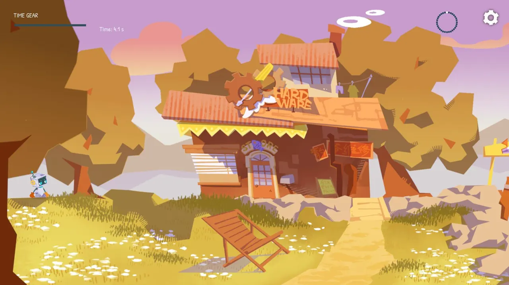
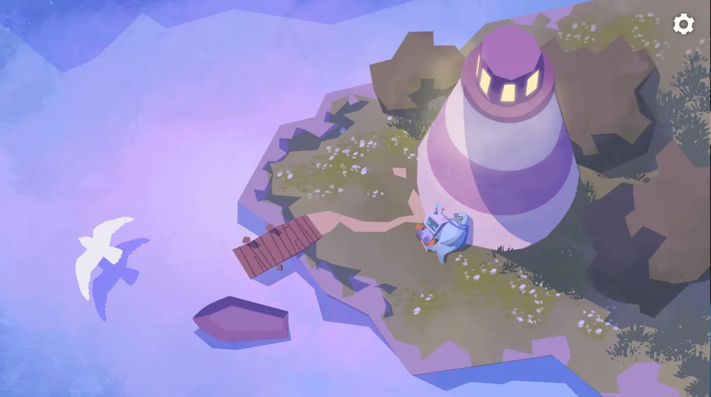

04
開場與結尾
劇情是一條直線：守燈人老海豹出海收網，風暴提前到來，燈塔沒有亮。人偶穿過海岸，登上燈塔上緊發條，燈亮了，小船朝著光劃回來。
開場原本是一段摸頭動畫，美術提議改成可操作的對話：人偶走到老海豹身邊按 E 交談，4 句臺詞交代了出海收網、看好家和回來再上發條，之後電視裡的天氣廣播說風暴提前。這是全遊戲唯一有對白的地方，臺詞不直接說出目標，玩家出門後看到遠處沒亮的燈塔，自己明白要去哪。
結尾配賽事主題音訊，整段原樣播放。音訊裡有五聲發條，畫面依次對上：0.3 秒開始上發條，20.6 秒燈亮，36.5 秒光束掃過海面找到小船，44.5 秒小船轉向，53.0 秒小船靠岸。

